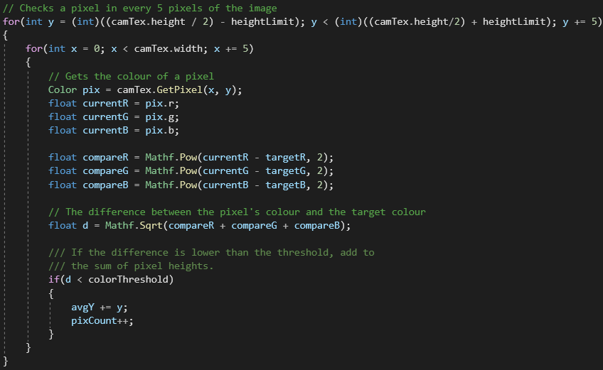
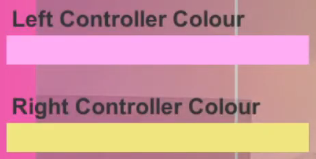
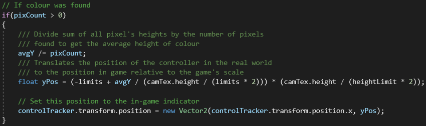
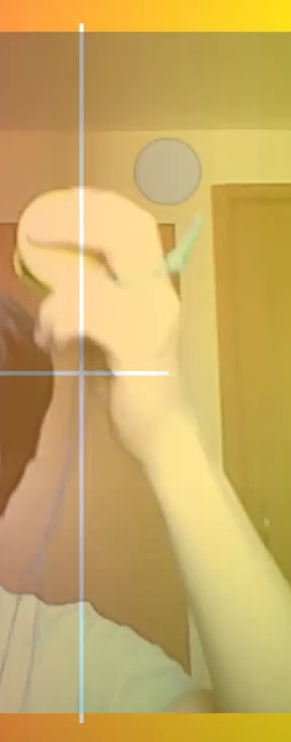
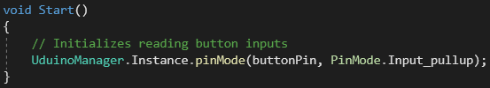
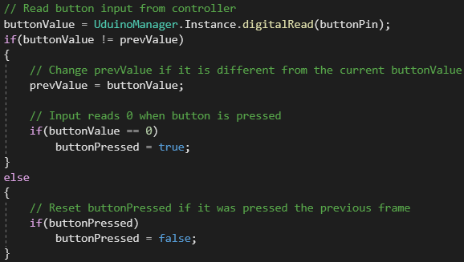
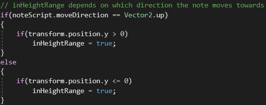
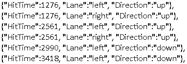
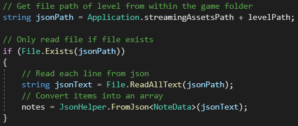
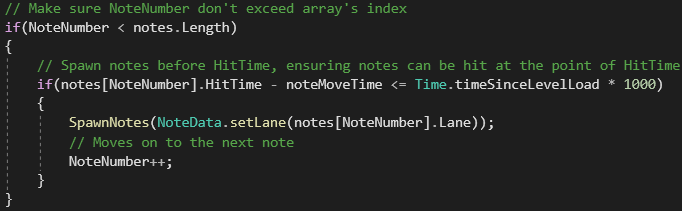

Check out this video demo!
Ever wanted to play your heart out on some... castanets? Well this game's got you covered. With a grand total of one song, you can play using the handmade castanets controller.
This project uses an arduino processor to create a usable controller, with the buttons being hooked up to a pair of castanets. The controllers were also painted so that they could be tracked by colours. Level data is also loaded by code.
To process imagery from a camera, the computer reads informations of what's being filmed. These information are stored in pixels, which is what we need to track out controllers. By disecting the RGB values of each pixel recorded from a camera, and comparing them to the RGB values of our wanted colour, we can determine the difference of the colours and whether if it's considered the same or similar enough. The code below only checks pixels 5 pixels apart to optimize the running of the function.
The target colours could also be changed in the game's settings, using a colour picker as well, to allow the player to play the game without issues with tracking, likely due to surrounding lighting.
If a cluster of the colour was found, as it is likely to find a group of pixels due to the controller's size, the game's control indicator will update to the average position of the cluster found.
 Uduino is a unity package that connects an arduino controller to a Unity project. The code below within Start allows the controller to be set up, by linking up the pin that is connected to the button as a valid input to the game.
In every frame of the game, the input will have to be monitored. For a digital button, the only possible value that would be output is 1 and 0, where 0 is when the button is pressed. This value changes when the button is pressed down or released, so to optimize this, instead of reading setting a boolean every frame depending on the value, we track the previous value and only run the code needed if this value changes. On another note, the game only supports clicks and not holding the buttons, so if the button is getting held, the coolean resets, avoiding issues of clicking multiple notes.
The game is quite lenient when it comes to controller position, as long as the indicator is on the correct half of the screen as the approaching note, it is considered valid.
Levels are stored as .json files, as .json is a very common and useful information container as a file structure. Below you can see how each note's information is stored, one line at a time.
These information is read and plugged into an array of notes, a class storing these needed information of which lane to on and where it's heading.
As HitTime is the time where the note is supposed to be hit, or alternatively when the note is supposed to hit the judgement bar, the note will have to spawn before the allocated HitTime for the player to react. This is done using simple time calculation of how long it will take for the note to travel from its spawn point to the judgement at a set speed. The notes are iterated until no more notes is read in the array, and the level will end.
